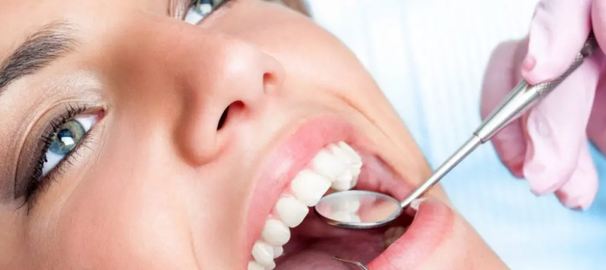

Odontología Conservadora en Madrid
Se entiende como odontología conservadora al conjunto de tratamientos que se realizan para mantener los dientes naturales el mayor tiempo posible evitando así extracciones innecesarias y tratamientos menos conservadores y más costosos. De esta manera se prolonga la vida útil de los dientes afectados y se posponen tratamientos más complejos y agresivos.
La base de la odontología general, es la prevención.
Los tratamientos más comunes en odontología general, son las obturaciones, más conocidas como “empastes”, las cuales restauran una parte del diente perdido por caries, fracturas o desgastes. Normalmente mediante anestesia local, se eliminar el tejido enfermo y se rellena con un material artificial, normalmente composite, hasta conseguir proporcionar la forma original del diente.
En clínica SmartDent, realizaremos una primera visita gratuita para valorar el estado general de tú boca y en función de tus necesidades, serás revisados por los distintos especialistas que forman nuestro equipo.
